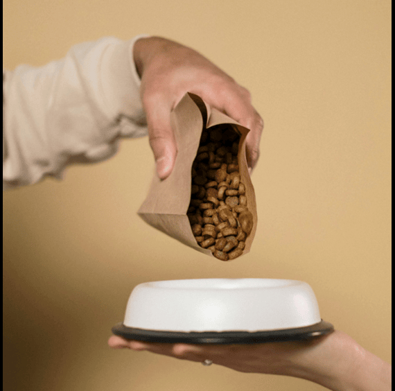
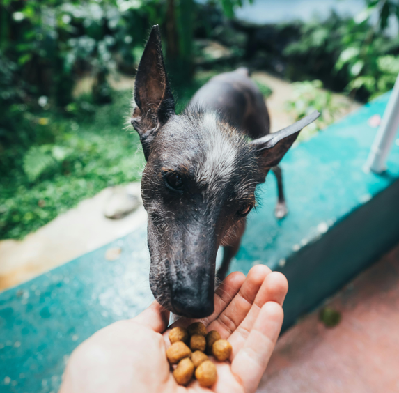
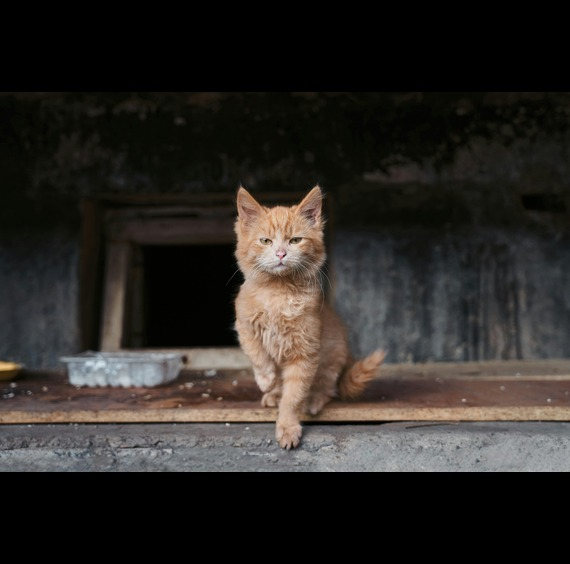
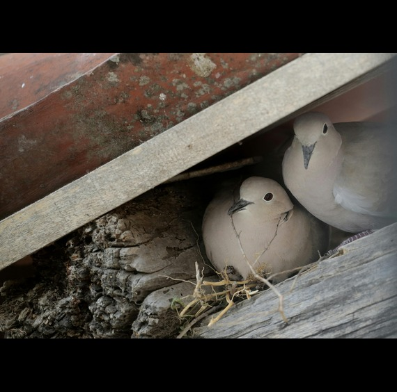

Our Blog
Explore our latest articles and enjoy reading heartwarming pet stories!

Donating Food to Our Furry Friends
Donating food to dogs in need is a powerful way to make a difference. Join us in spreading love and care to our furry companions—every little bit helps!

The Joy of Feeding Our Furry Friends
Feeding dogs is more than just a necessity; it’s an act of love that strengthens our bond with them. Let’s celebrate the joy of nurturing our furry companions, one meal at a time!

The Joy of Adopting a Cat
Adopting a cat not only saves a life but also brings endless joy and companionship into your home. Consider giving a loving feline a forever home—your new best friend is waiting!

The Joy of Adopting a Bird
Adopting a bird opens the door to a vibrant and playful companionship. Give a feathered friend a forever home and enjoy the joy and song they bring to your life!